Probabilistic Modelling of Customer Purchasing Behaviour
A study of 36,594 invoices and 5,852 customers from the Online Retail II dataset. Each tab holds the original notebook outputs for one stage: distribution fitting, customer segments, lifetime value and a Monte Carlo revenue forecast, plus the Power BI dashboard and the project slides.
Pranjal · Arnab · Aarya · Mahek
Symbiosis Statistical Institute · AY 2026–27 · Python and Power BI
Pick a stage
Key findings
- Counts are heterogeneousPoisson dispersion is 1.98 and the fit is rejected.
- Spending is strongly right-skewedLognormal AIC 518,591 is lower than Gamma AIC 524,482.
- Nine customer segments95.27% average assignment confidence.
- Segmentation helps CLV prediction28.4% lower MAE than the one-group baseline.
- Forecast uncertainty is quantified12-month simulated mean £8.68M, 95% range £8.46M to £8.90M.
What the results do and do not show
- UK-weighted. The UK accounts for £14.62M of £17.43M in sales.
- Boundary months. The first and last of 25 months are incomplete.
- Separate AIC scales. Poisson, Geometric and invoice-value AICs describe different outcomes and cannot be compared.
- Backtest under-predicts. The segment CLV model is 35.2% below actual revenue in the holdout months.
- Model-based range. The Monte Carlo interval comes from the fitted models, not from out-of-sample accuracy.
Retail IQ dashboard
The four report pages as they appear in Power BI. Pick a page from the tabs at the bottom, and click the page to view it full size. These are exported page images, so slicers and filters do not respond here; open the .pbix file in Power BI Desktop for those.
retail_dashboard.pbix · exported pages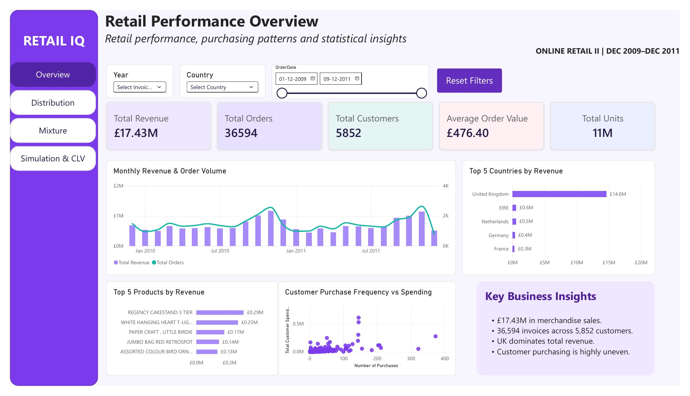
From 1,067,371 raw lines to 802,555 merchandise lines
Most of the loss came in the first cleaning step. Four later steps removed 345 lines of carriage fees, test products, accounting adjustments and next-day carriage entries. Plausible duplicates and large orders were kept and flagged.
finalize_online_retail.py · EDA.ipynbLines remaining after each step
Kept on purpose: 26,055 repeated lines across 24,647 groups, 799 high-value lines and 36 high-value invoices, and 1,671 customers with no repeat purchase for timing analysis.
Four analytical datasets
| Level | Records | Used for |
|---|---|---|
| Product line | 802,555 | Exploratory analysis |
| Invoice | 36,594 | Gamma and Lognormal |
| Customer | 5,852 | Mixture, CLV, simulation |
| Customer-month | 56,944 | Poisson counts |
Scope is positive merchandise sales. Amounts are gross invoice values, not net of returns.
Descriptive statistics
| Variable | Mean | Median | Variance | Std. dev. | Skewness |
|---|---|---|---|---|---|
| Product quantity | 13.32 | 5.00 | 20,700.25 | 143.88 | 405.88 |
| Line amount (£) | 21.72 | 11.80 | 49,542.74 | 222.58 | 599.92 |
| Invoice amount (£) | 476.40 | 304.64 | 1,888,534 | 1,374.24 | 60.27 |
| Purchase count | 6.25 | 3.00 | 162.54 | 12.75 | 12.04 |
| Customer total spending (£) | 2,979.03 | 880.38 | 213,304,900 | 14,604.96 | 25.58 |
Purchase counts have a variance-to-mean ratio of about 26. Mean customer spending is more than three times the median.
EDA charts from the notebook
Pick a chart. Each is the original notebook output, with the finding the notebook recorded.
Top five products and countries
Top 5 countries by sales
41 countries in total. The UK dominates, so results are UK-weighted.
Top 5 products by revenue (dashboard)
Poisson: monthly purchases per customer
Counts of invoices per customer per month, including zero-purchase months between a customer's first and last purchase month. A Poisson model needs variance equal to the mean. Here the variance is almost twice the mean.
Poisson_Fitting.ipynbPoisson fit rejectedObserved vs expected, interactive
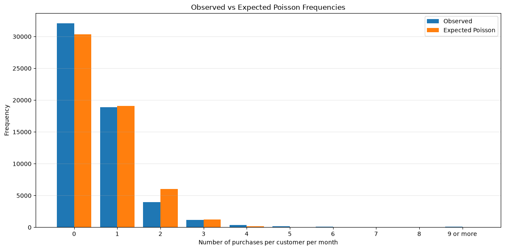
Poisson_Fitting.ipynb, cell 14. Large gaps appear between observed and fitted frequencies, especially in the high-count tail.Chi-square groups (expected ≥ 5)
| Purchases | Observed | Expected |
|---|---|---|
| 0 | 32,055 | 30,358.13 |
| 1 | 18,862 | 19,095.38 |
| 2 | 3,968 | 6,005.54 |
| 3 | 1,141 | 1,259.17 |
| 4 | 399 | 198.01 |
| 5 or more | 519 | 27.78 |
Mean 0.6290, variance 1.2449. Degrees of freedom are 6 groups − 1 − 1 estimated parameter = 4. Customers with five or more purchases in a month are about 19 times more common than Poisson allows.
Reading the result
Poisson is a useful baseline but not an adequate overall count model. Ignoring different purchase rates across customers distorts forecasts for both inactive and frequent customers, which is what the mixture model in the later tabs addresses.
The monthly panel covers December 2009 to November 2011, 24 complete months, 35,818 invoices. December 2011 is dropped because the data ends on 9 December.
Geometric: days until a customer's second purchase
Customers who had not returned by the end of the data are right-censored, and the estimate uses them. A single daily return probability is compared against a Kaplan–Meier survival curve.
Geometric_Fitting.ipynbConstant rate not supportedCumulative return probability, observed vs Geometric
Daily return hazard by interval
The hazard is highest in the first month and falls to 0.00249 after day 90, so a single constant rate does not describe the timing.
Original notebook charts
Constant vs two-phase hazard
| Model | Parameters | AIC | BIC |
|---|---|---|---|
| Geometric, constant hazard | 1 | 54,360.41 | 54,367.08 |
| Two-phase hazard | 2 | 53,997.69 | 54,011.04 |
Two-phase daily return probabilities: early 0.007113, late 0.003503. Lower AIC and BIC favour the two-phase model.
Fitted model quantities
| 95% bootstrap interval for p | 0.003899 to 0.004222 |
| Model variance | 60,702.53 |
| P(return within 7 days) | 2.80% |
| P(return within 30 days) | 11.46% |
| Observed returners: mean / median | 106.18 / 63 days |
| Observed returners: std. dev. / max | 114.68 / 714 days |
The model's 247-day mean and the returners' 106-day mean cannot be compared directly, because the observed mean leaves out censored customers. A narrow bootstrap interval shows p is estimated precisely. It does not show the model is right.
Gamma and Lognormal: invoice amounts
Both families are fitted by maximum likelihood to all 36,594 positive invoice amounts, so their AIC and BIC can be compared. Lognormal wins on both.
Gamma_Fitting.ipynb · monte_carlo.ipynbLognormal preferred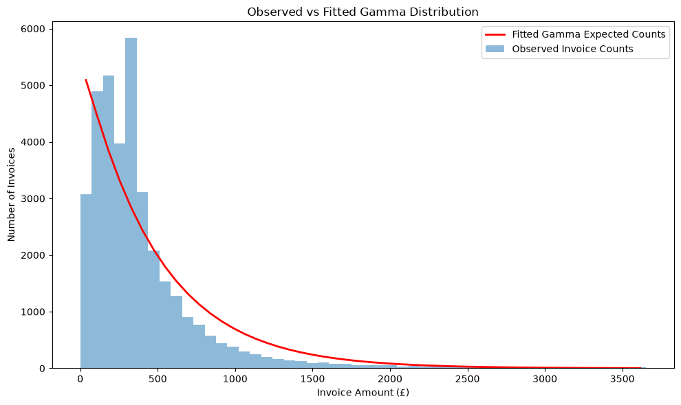
Gamma_Fitting.ipynb, cell 5 (histogram to the 99th percentile). The fitted curve misses the central peak and the upper tail.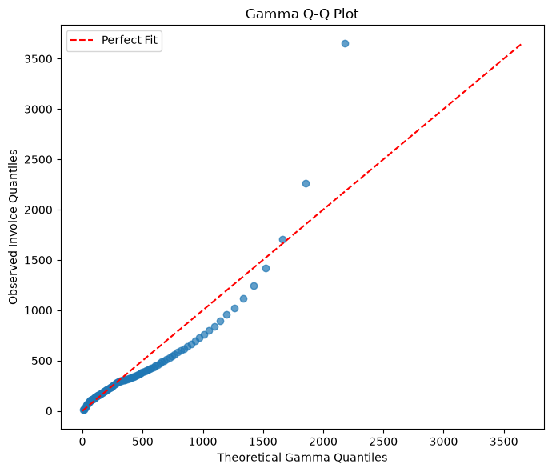
Gamma_Fitting.ipynb, cell 6. Points leave the dashed 45° line in the upper quantiles.Model comparison
| Model | AIC | BIC |
|---|---|---|
| Gamma | 524,482.28 | 524,499.29 |
| Lognormal | 518,591.05 | 518,608.06 |
Gamma: MLE vs method of moments
| Method | Shape | Scale |
|---|---|---|
| Maximum likelihood | 1.0152 | 469.279 |
| Method of moments | 0.1202 | 3,964.10 |
The fitted Gamma variance is 223,563 against an observed 1,888,534. The two estimators disagree because the sample variance is driven by a few very large invoices.
Tail probability explorer
Drag the threshold to see the probability of an invoice above it under each fitted model. Values are computed here from the fitted parameters.
Nine customer segments
Purchase count and average invoice amount are log-transformed, standardised and clustered for the 5,824 customers active in the 24 complete months. AIC and BIC both pick nine components. One small segment carries about 37% of spending.
Joint_Poisson_Lognormal_Mixture.ipynb9 componentsSegment explorer
Pick a segment, or click a table row.
All segments
Shares are calculated from the table. The size-weighted mean of segment spending is £2,905.25, which equals the overall customer mean.
Model selection: AIC and BIC by components
Assignment confidence
Median confidence is 0.99997 and the lowest is 0.35. High confidence shows the groups are well separated. The CLV tab checks whether they predict anything.
Correlations
| Purchases | Avg invoice | Total | |
|---|---|---|---|
| Purchases | 1.000 | 0.077 | 0.628 |
| Avg invoice | 0.077 | 1.000 | 0.303 |
| Total spend | 0.628 | 0.303 | 1.000 |
Original notebook charts
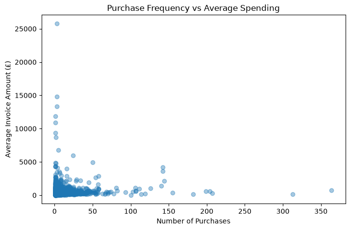
Joint_Poisson_Lognormal_Mixture.ipynb, cell 5. A few customers have very large average invoices.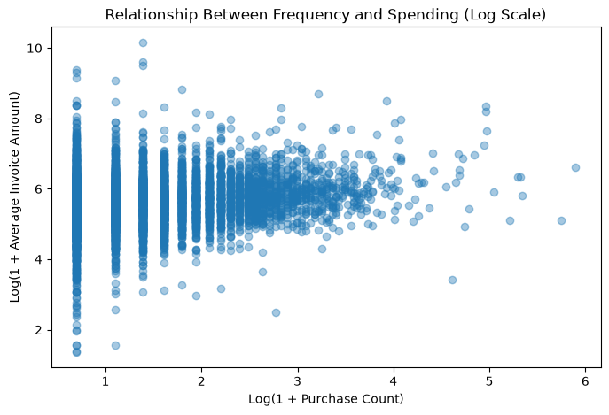
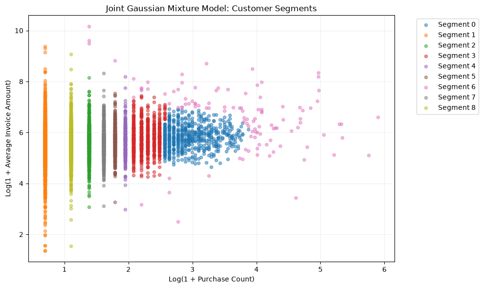
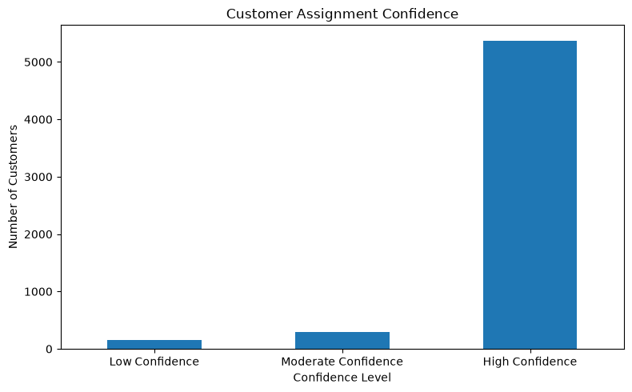
Three-month CLV validation
The mixture is refitted on January to August 2011 for 4,205 customers who bought in 2010, then used to predict September to November 2011 revenue. A one-group model is the baseline. CLV here means three-month expected revenue, not discounted lifetime profit.
CLV_Modelling.ipynb28.4% lower MAEPredicted vs actual revenue
Error per customer
MAE is 28.4% lower with segments, RMSE 12.7% lower. Both forecasts still come in below actual; the segment model is 35.2% short in total.
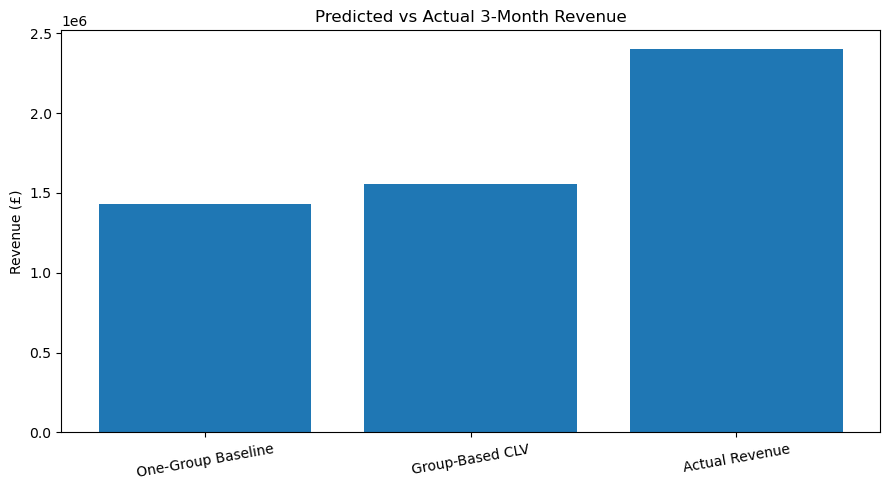
CLV_Modelling.ipynb, cell 8.Group explorer
These groups are refitted on the training data, so their numbers differ from the Mixture tab. Group 1 is the 2,009 customers with no training purchases, so its predicted revenue is zero.
Expected 3-month revenue per customer, by group
Twelve-month revenue forecast
Each of 1,000 runs draws a Poisson number of purchases for every customer from their own monthly rate, then draws each invoice from the fitted Lognormal and adds everything up. The spread across runs is the forecast range.
monte_carlo.ipynb · monte_carlo_customer_clv.csvModel-based range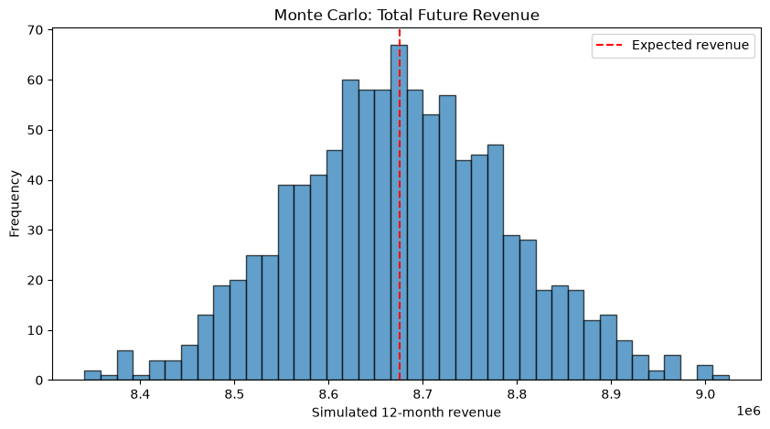
monte_carlo.ipynb, cell 7. Total simulated 12-month revenue across 5,852 customers. Interval £8,460,816.91 to £8,903,107.47.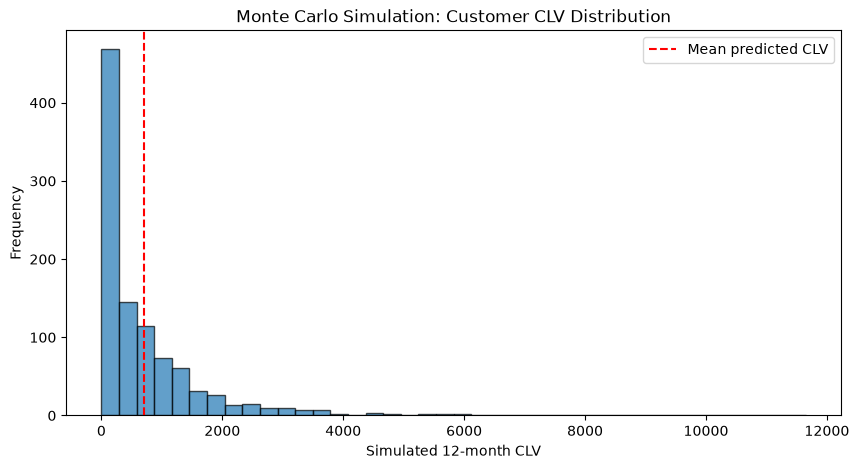
Customer lookup
Search any customer ID from the notebook's output file. Rates are purchases divided by 24.25 observed months; invoice values use Lognormal μ 5.5987 and σ 1.0705.
Loading customer file…
Top 10 customers by predicted 12-month CLV
The slide deck
All 31 slides. Use the arrow keys or the buttons, or pick a slide below.
Customer_Purchasing_Behaviour_With_Cleaning_And_Statistics.pdf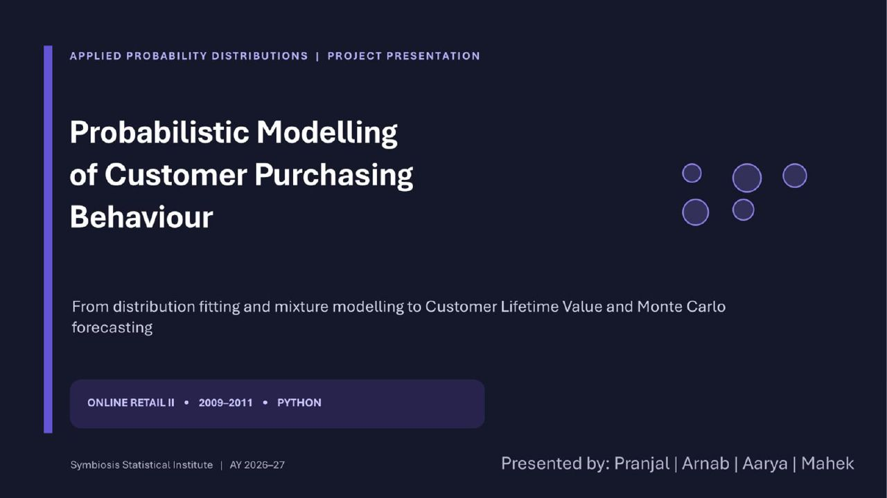